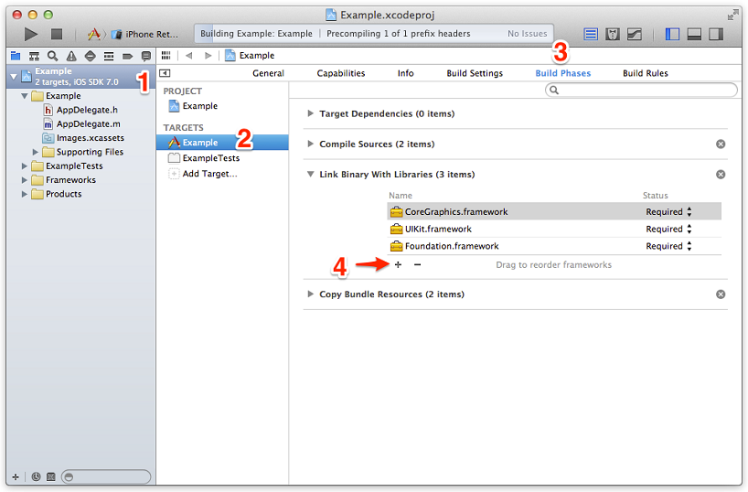
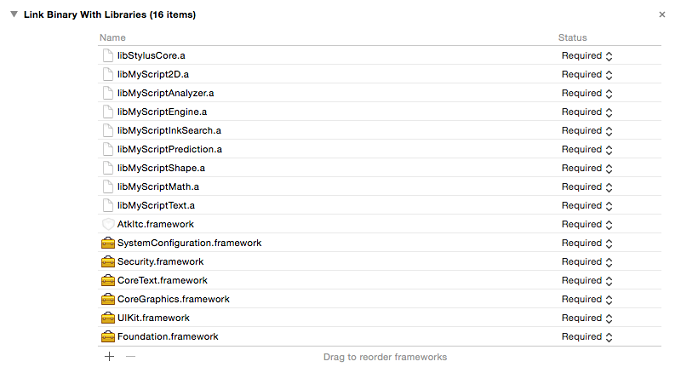
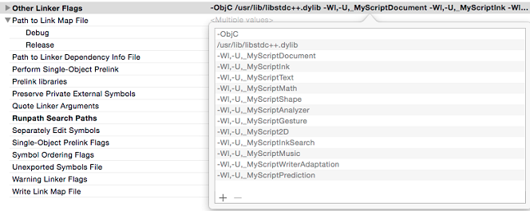

Integration
Framework
The Interactive Text Component for iOS is a framework that you add to your Xcode project. To do so, follow this process:
- Click on your project in the project navigator. (1)
- Choose the relevant target. (2)
- Open the Build Phase tab. (3)
- In the Link Binary With Libraries section, click on the + sign, then Add Other… (4)

- Click on the + sign and add the following frameworks and libraries:
- AtkItc.framework
- Security.framework
- SystemConfiguration.framework
- libMyScript2D.a
- libMyScriptAnalyzer.a
- libMyScriptEngine.a
- libMyScriptInkSearch.a
- libMyScriptMath.a
- libMyScriptPrediction.a
- libMyScriptShape.a
- libMyScriptText.a
- libStylusCore.a
To understand why ITC needs to be linked to the UI frameworks, see the following section.

- In the Build Settings tab of your target, look for Other Linker Flags and add the following flags:
- -ObjC
- /usr/lib/libstdc++.dylib
- -Wl,-U,_MyScript2D
- -Wl,-U,_MyScriptAnalyzer
- -Wl,-U,_MyScriptDocument
- -Wl,-U,_MyScriptGesture
- -Wl,-U,_MyScriptInk
- -Wl,-U,_MyScriptInkSearch
- -Wl,-U,_MyScriptMath
- -Wl,-U,_MyScriptMusic
- -Wl,-U,_MyScriptPrediction
- -Wl,-U,_MyScriptShape
- -Wl,-U,_MyScriptText
- -Wl,-U,_MyScriptWriterAdaptation
- -ObjC
- Modify your search path to link with SDK and Stylus Core libraries.


UI Framework dependency
The ITC is a UI-free component but in order to facilitate the integration of typeset text, we implemented a default CharBoxFactory. To do so, we had to link it with some UI frameworks:
- UIKit: to set the UIFont you want for our default implementation of the CharBoxFactory.
- CoreGraphics: to obtain the return values of ITCCharboxFactoryProtocol.
- CoreText: to calculate the boxes depending on the typeset font you want.
Handwriting recognition resources
Resources should include at least an AK type resource. More LK resources can be added as well, to improve and/or specialize the handwriting recognition.
For example, in US English, resources should be at least:
- en_US-ak-cur.lite.res
- en_US-lk-text.lite.res
Code
To use the Interactive Text component in your app, add the following import instructions:
#import <AtkItc/ITC.h>ITCPageInterpreter
// Instantiate an ITCPageInterpreter
ITCPageInterpreter* pageInterpreter = [ITCPageInterpreter pageInterpreter];
// Get the resources from the bundle
NSString *akCur = [[NSBundle mainBundle] pathForResource:@"en_US-ak-cur.lite" ofType:@"res"];
NSString *lkText = [[NSBundle mainBundle] pathForResource:@"en_US-lk-text.lite" ofType:@"res"];
NSArray *resources = @[akCur, lkText];
// get valid certificate
NSData *certificate = [NSData dataWithBytes:myCertificate.bytes length:myCertificate.length];
// Configure for the recognition
[pageInterpreter configurePageInterpreter:@"en_US" resources:resources lexicon:nil certificate:certificate density:dpi andFreezeTimeout:650];ITCSmartPage
The following lines allow you to have a page where you can add strokes and get recognition.
// Instantiate an ITCStrokeFactory and ITCWordFactory
ITCStrokeFactory *strokeFactory = [ITCStrokeFactory strokeFactory:nil];
ITCWordFactory *wordFactory = [ITCWordFactory wordFactory:strokeFactory wordUserParamFactory:nil];
// Instantiate an ITCSmartPage
ITCSmartPage *page = [ITCSmartPage smartPageWithWordFactory:wordFactory];
// Register self as delegate to be notified for strokes/words added/removed and recognition
[page setDelegate:self];
[page setRecognitionDelegate:self];
// Attach the page on the page interpreter
[pageInterpreter setPage:page];
Adding an ITCSmartStroke
// Construct an array of x
NSArray *x = @[@20.0F, @20.0F, @20.0F, @30.0F, @40.0F];
// Construct an array of y
NSArray *y = @[@20.0F, @35.0F, @50.0F, @40.0F, @50.0F];
// Create the timestamps
NSDate *date = [NSDate date];
NSTimeInterval startTimestamp = [date timeIntervalSince1970];
NSTimeInterval endTimestamp = [date timeIntervalSince1970];
// Create the stroke
ITCSmartStroke *stroke = [strokeFactory createStrokeWithX:x
y:y
startTimestamp:startTimestamp
endTimestamp:endTimestamp
userParams:nil
strokeType:ITCStrokeTypeRecognitionStroke];
// Add the stroke in the page
[page addStroke:stroke];